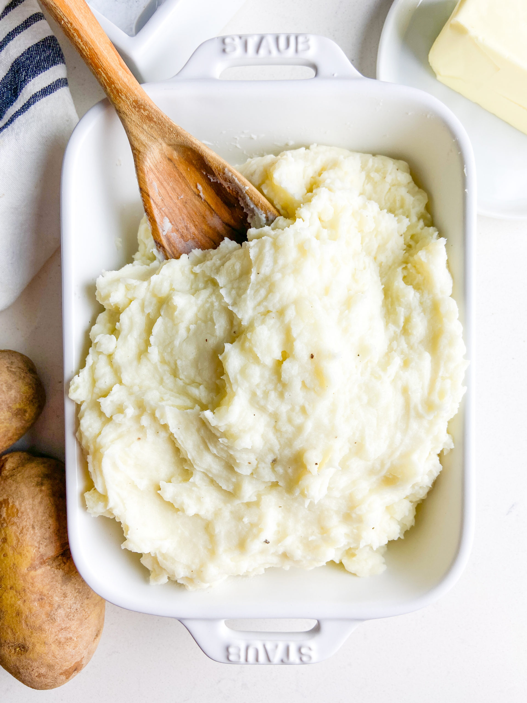

Mashed Potatoes

Description
Mashed potato, mashed potatoes or mashed taters, colloquially known as mash,
is a dish made by mashing boiled potatoes,
usually with added milk, butter, salt and pepper
Ingredients
- 8 medium russet potatoes (about 4 pounds)
- 1 head peeled garlic cloves (about 15)
- salt
- 1 1/2 cups milk
- 1/2 cup butter (1 stick), cut into small pieces
Steps
- Boil the potatoes: Add the potatoes and garlic to a large pot of salted, boiling water. Reduce the heat and simmer until the potatoes are tender.
- Heat the milk: Heat the milk and butter in a saucepan until the butter is melted
- Mash the potatoes: Drain the potatoes, then return them to the pot. Slowly add the warm milk mixture,
mashing with a potato masher or blending with a mixer until the potatoes are smooth and creamy. Season to taste